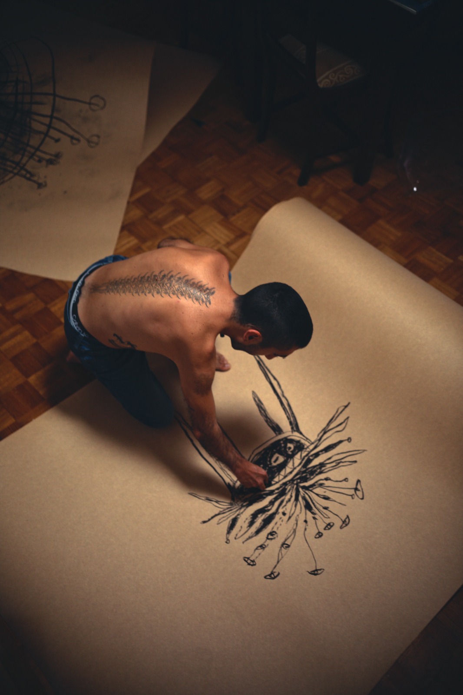

About
Nuno Azevedo is a Portuguese artist based in Porto whose practice moves between figurative and abstract expression. Working across a range of media, including oil pastel, dry pastel, charcoal, and other materials on paper, canvas, and cardboard, his work explores the relationship between instinct, bodily impulse, imagination, and perception. His abstract works develop through the movements and physical sensations of the body, often guided by unconscious impulses rather than predetermined ideas.
In his figurative work, representation is shaped by subjective experience. His childlike drawings and paintings emerge from an attempt to work with greater freedom and honesty. This involves letting go of learned ways of representing the world in order to move beyond appearances. Distortion and simplification become ways of reaching a more direct and personal way of seeing the world, shaped by inner experience rather than simply by what the eye sees.
